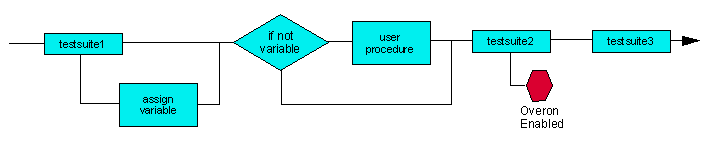

Delay Binning IV - Assigning Variables & User Procedures
This solution - shown schematically in the figure below - takes the failing sites from testsuite 1 and assigns a variable to them. An if...then condition separates the failing sites which continue to Testsuite 2. Sites which pass, however, are subject to a user procedure which opens the relays for the drive pins for the duration of testsuite 2. Sites which then pass testsuite 2 together with those that passed testsuite 1 pass on to testsuite 3.

This solution necessitates, however, that opening the relays for the drive pins of sites that passed testsuite 1 (while failing sites are subject to testsuite 2) does not adversely affect the devices.
Functional changes
- Introduced before SmarTest 6.3.2